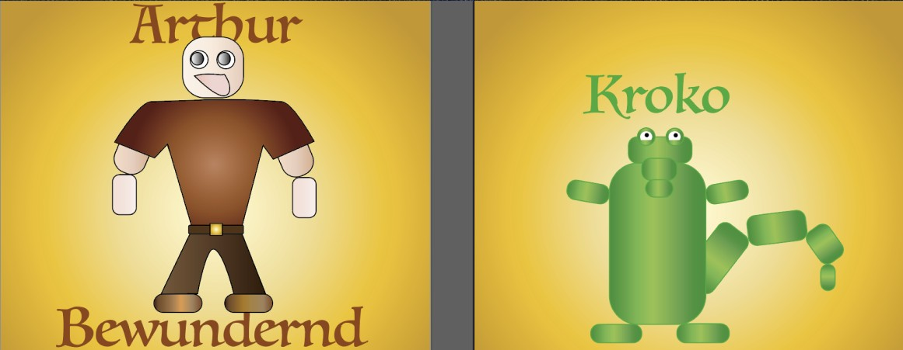
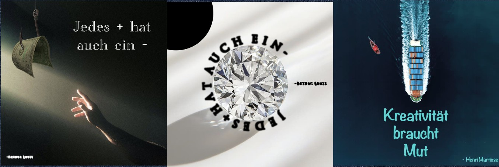
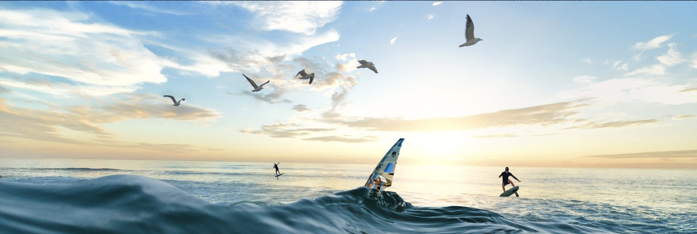

Für mein aktuelles Charakterdesign-Projekt habe ich ein Krokodil entworfen, das sich konsequent am minimalistischen, freundlichen „Duolingo-Stil“ orientiert. Mein Ziel war es, ein Tier, das üblicherweise als gefährlich und bedrohlich wahrgenommen wird, in eine sympathische und einladende Lernfigur zu verwandeln.
Durch den gezielten Einsatz von klaren Vektoren, reduzierten Formen und einer lebendigen Farbpalette wirkt das Krokodil direkt nahbar. Besonderes Augenmerk lag dabei auf den markanten Augen und einer weichen Mimik, die dem Charakter eine freundliche Ausstrahlung verleihen. Diese bewusste Stilwahl sorgt dafür, dass die Figur perfekt in eine spielerische, moderne Lernumgebung passt und Nutzer auf positive Weise motiviert. So wird aus dem eigentlich gefürchteten Reptil ein charmanter, digitaler Begleiter, der komplexe Lerninhalte auflockert und durch seine reduzierte Ästhetik eine hohe Wiedererkennbarkeit besitzt. Dieses Projekt zeigt eindrucksvoll, wie durch gezielte Stilisierung die emotionale Wirkung eines Charakters grundlegend verändert werden kann, um eine vertrauensvolle Bindung zum Anwender aufzubauen.

Diese drei Plakate entstanden im Rahmen des Schulprojekts „Schriftmischung“ im Fach MGG. Jedes Design setzt ein Zitat visuell und typografisch um – bewusst unterschiedlich in Stil, Stimmung und Bildsprache.
Beim ersten Plakat („Jedes + hat auch ein –“, Diamant) wird die Schrift kreisförmig um das Motiv geführt – eine formale Entscheidung, die Zitat und Bild zu einer Einheit macht. Beim zweiten Plakat desselben Zitats steht die Wirkung über die Eleganz: ein Angelhaken mit Geldschein, eine greifende Hand – die Doppeldeutigkeit des Textes wird ohne Umwege sichtbar. Das dritte Plakat („Kreativität braucht Mut“) spielt mit dem Kontrast zwischen einem riesigen Containerschiff und einem kleinen roten Boot – das kleine steht für den mutigen, kreativen Menschen.
Die Arbeit zeigt mein Interesse an Gestaltung, Typografie und der Frage, wie Text und Bild zusammen mehr sagen als jeder Teil allein.

Im Unterrichtsfach MTIN habe ich ein Bildbearbeitungsprojekt in Adobe Photoshop umgesetzt. Dabei habe ich zuerst ein Hintergrundbild aus einer Welle, dem Meer und einem Sonnenuntergang erstellt und auf eine stimmige Farb- und Lichtwirkung geachtet.
Anschließend habe ich mehrere Surfer in das Bild hineineditiert. Dabei war es mir wichtig, dass sie gut zur Perspektive, zur Bewegung der Wellen und zu den Lichtverhältnissen passen, damit das Gesamtbild realistisch wirkt.
Durch die Arbeit mit Ebenen, Masken und Farbkorrekturen konnte ich die einzelnen Elemente sauber miteinander verbinden.
Dieses Projekt hat mir gezeigt, wie ich kreative Ideen umsetzen und gleichzeitig genau und strukturiert arbeiten kann. Außerdem konnte ich meine Kenntnisse in der Bildbearbeitung weiter verbessern und mein Interesse an Design und Medien vertiefen.